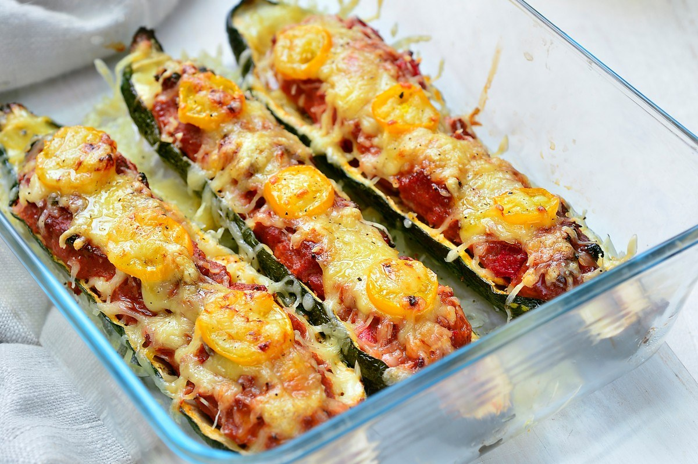

Gevulde courgettes met gehakt

Ingredienten
- 4 courgettes
- 100 gr gemalen kaas
- 10 gele kerstomaatjes
- olijfolie
- peper
- zout
Voor het gehakt
- 500 gr kippengehakt
- 1 rode paprika, in blokjes
- 1 bol mozzarella, in stukjes
- 1,5 tl kippenkruiden
- 0,5 tl cayennepeper
- 1 tl paprikapoeder
- 2 el tomatenpuree
- peper en zout
Bereiding
- Snijd de courgettes in de lengte doormidden. Hol ze uit met een lepel. Leg de courgettes op een met
bakpapier beklede bakplaat en kruid ze met peper, zout en olijfolie. Plaats de courgettes gedurende 15
minuten in een voorverwarmde oven van 180 graden.
- Maak ondertussen het gehaktmengsel. Meng in een grote kom alle benodigdheden. Haal de courgettes uit de oven
en vul ze op met het mengsel. Bestrooi vervolgens met een laagje gemalen kaas en leg er nog enkele
kerstomaatjes bovenop. Plaats de courgettes terug in de oven voor +- 35 minuten tot de kaas mooi goudbruin
gesmolten is.